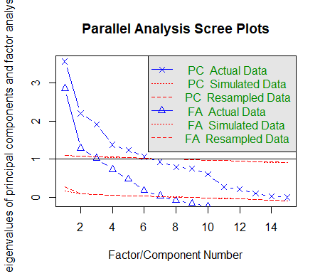
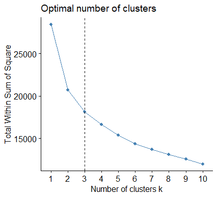
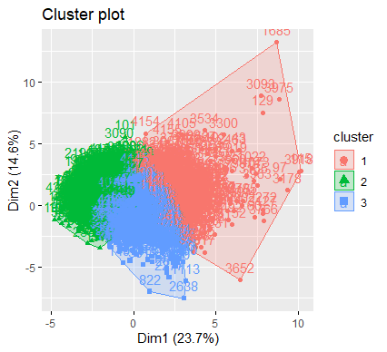
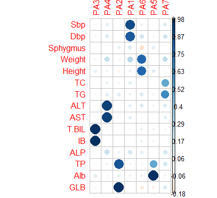

因子分析是主成分分析的推广和发展，将多个变量综合为少数几个因子，以再现原始变量和因子之间的相关关系。原始变量是可观测的显在变量，而潜在变量是不可观测的称为潜在因子。
因子分析和主成分分析的区别：
主成分分析不能作为一个模型来描述，它只是通常的变量变换，而因子分析需要构造因子模型，它希望选取尽可能少的公因子，以便构造一个结构简单的因子模型；
主成分分析是将主成分表示为原始变量的线性组合，而因子分析是将原始变量表示为公因子和特殊因子的线性组合，用假设的公因子来解释相关阵的内部依赖关系。
因子模型
设${X_{i}, i=1, \ldots, p}$为$p$个变量，因子分析模型表示为
$$X_{i}=\mu_{i}+\alpha_{i 1} F_{1}+\cdots+\alpha_{i m} F_{m}+\epsilon_{i}, \quad i=1, \ldots, p$$
$$
\mathbf{X}-\boldsymbol{\mu}=\mathbf{A} \mathbf{F}+\boldsymbol{\epsilon}
$$
- 称$F_{1}, \ldots, F_{m}$为公共因子，是不可观测的变量，他们的系数称为因子载荷。
- $\epsilon $为特殊因子，是不能被前$m$个公共因子包含的部分。
参数估计方法
这里主要讲述主成分法，此外还有主因子解，极大似然法。其中主因子法常常采用迭代主因子法，它是主成分法的一种修正。
设样本协方差为$S$的特征值为$\lambda_{1} \geq \ldots \geq \lambda_{p} \geq 0$，相应单位特征向量为$l_1,l_2,…,l_p$，则$S$有谱分解式：
$$S=\Sigma_{i=1}^{p}\lambda_i l_i l_i’$$
当最后$p-m$个特征值较小时，$S$可近似地分解为
$$S =\lambda_{1} l_{1} l_{1}’+\cdots+\lambda_{m} l_{m} l_{m}’+D=AA’+D$$
其中，
$$A=\sqrt{\lambda_{1}} l_{1}+\cdots+\sqrt{\lambda_{m}} l_{m}=\left(a_{i j}\right)_{p \times m} $$
$$\sigma_{i}^{2}=s_{ii}-\sum_{t=1}^{m} a_{i t}^{2}$$
$A$和$D$即为因子模型的一个解，称为主成分解。
公因子个数$m$的确定方法:
- 根据实际问题的意义或专业理论知识来确定
- 用确定主成分个数的原则，选$m$为满足
$$\frac{\lambda_{1}+\cdots+\lambda_{m}}{\lambda_{1}+\cdots+\lambda_{p}} \geq P_{0}$$
一般$P_0\geq 0.7$
主成分估计的具体步骤
- step1: 计算样本相关阵$R$
- step2: 求$R$的特征值和标准化特征向量
- step3: 求因子模型的因子载荷矩阵$A$
- step4: 求特殊因子方差及共同度
- step5: 结合专业知识对$m$个公共因子作解释
对应函数
1 | factor.analy1<-function(S, m){ |
函数应用
注意由于数据没有标准化，所以采用cor, 如果数据标准化过了，可采用cov或cor.
1 | S<-cor(ex1) |
方差最大的正交旋转
只用前面方法初始因子的载荷矩阵不满足“简单结构准则”，即各个公共因子的典型代表变量不很突出。为此需要对因子载荷矩阵进行旋转变换，使得各因子载荷矩阵的每一列各元素的平方按列向0或1两级转化以达到简化结构的目的。
因子得分
因子得分：把公共因子表示成变量的线性组合，反过来对每一个样品计算公共因子的估计值。
加权最小二乘法–巴特莱特因子得分
回归法–汤普森因子得分
实践
Q1
（1）我国2010你那各地区城镇居民家庭平均每人全年消费数据如ex6.7所示，这些数据指标分别从食品（x1）,衣着（x2），居住(x3)，医疗(x4)，交通通信(x5)，教育(x6)，家政(x7)和耐用消费品(x8)来描述消费。试对该数据进行因子分析。
1 | > head(ex1) |
使用factanal函数进行因子分析
该函数是基于极大似然方法来进行参数估计的
1 | factanal(ex1, 3, scores="none", rotation="none") |
1 | Call: |
x 为数值矩阵或数据表单
factors 为因子个数
scores 为因子得分的计算方法，包括 regression, Barlett
rotation 为因子旋转方法，缺省为varimax，如果rotation=”none”则不做因子旋转.
1 | Uniquenesses: |
Uniquenesses是特殊因子方差
1 | Loadings: |
Loadings是因子载荷矩阵
1 | Factor1 Factor2 Factor3 |
SS loadings: 公共因子对变量的总方差贡献
Proportion Var: 方差贡献率
Cumulative Var: 累积方差贡献率
经假设检验，三个因子是充分的。
- 因子得分：1）巴特莱特因子得分；2）汤普森因子得分
巴特莱特因子得分
1 | > Bartl<-factanal(ex1, 3, scores="Bartlett", rotation="none") |
汤普森因子得分
1 | > Regre<-factanal(ex1, 3, scores="regression", rotation="none") |
可以发现两种方法的因子得分是较为接近的。
Q2
（2）采用“体检数据”。这是一组4000多个样本的体检资料，分别有常规体检的一系列指标。
| Sbp | Dbp | Sphygmus | Weight | Height | TC | TG | ALT |
|---|---|---|---|---|---|---|---|
| 收缩压 | 舒张压 | 脉搏 | 体重 | 身高 | 总胆固醇 | 甘油三酯 | 谷丙转氨酶 |
| AST | T-BIL | IB | ALP | TP | Alb | GLB |
|---|---|---|---|---|---|---|
| 谷草转氨酶 | 总胆红素 | 间接胆红素 | 碱性磷酸酶 | 总蛋白 | 白蛋白 | 球蛋白 |
请考虑下面的问题：
一、 利用主成分方法变量进行降维，然后进行相应的主成分方法聚类分析；
二、 构建因子分析模型，进行因子旋转，分析每个因子的意义及这些潜在的因子与年龄的关系。
判断PCA中需要多少个主成分
判断主成分的个数PCA中需要多少个主成分的准则：
- 根据先验经验和理论知识判断主成分数；
- 根据要解释变量方差的积累值的阈值来判断需要的主成分数；
- 通过检查变量间k*k的相关系数矩阵来判断保留的主成分数。
判断主成分的个数PCA中需要多少个主成分的方法：
- 最常见的是基于特征值的方法，每个主成分都与相关系数矩阵的特征值 关联，第一主成分与最大的特征值相关联，第二主成分与第二大的特征值相关联，依此类推。Kaiser-Harris准则建议保留特征值大于1的主成分，特征值小于1的成分所解释的方差比包含在单个变量中的方差更少。
- Cattell碎石检验则绘制了特征值与主成分数的图形，这类图形可以展示图形弯曲状况，在图形变化最大处之上的主成分都保留。
- 还可以进行模拟，依据与初始矩阵相同大小的随机数矩阵来判断要提取的特征值。若基于真实数据的某个特征值大于一组随机数据矩阵相应的平均特征值，那么该主成分可以保留。该方法称作平行分析。
利用fa.parallel（）函数，可同时对三种特征值判别准则进行评价。
1 | > fa.parallel(data) |
注意到这组数据给出了警告说它的相关性阵奇异，这和运算有关，理论上相关性矩阵必是正定的。

并行分析表明，因子数量= 7，主成分数量= 6
对数据作因子分析
由上我们选取nfactors=7作因子分析
1 | pc<-principal(data,nfactors=7) |
1 | > pc |
h2：成分公因子方差，主成分对每个变量的方差解释度
u2：成分唯一性，方差无法被主成分解释的比例（1-h2）
SS loadings: 公共因子对变量的总方差贡献
Proportion Var: 方差贡献率
降维聚类
利用主成分方法变量进行降维，然后进行相应的主成分方法聚类分析
- 获取主成分因子得分
1 | pc_score<-pc[["scores"]] |
1 | > head(pc_score) |
- 用因子得分进行聚类分析
注意我们此时已经将数据进行降维，即我们利用主成分进行聚类分析。那么先降维再聚类的好处在哪里呢？
这是因为在维度很高时，有很多变量比如$(x_1,x_2,…,x_m)$，样本$A_1$与$A_2$的$x_i$都很接近，而样本$A_2$和$A_3$在$x_1,…,x_p$相差较大，而$x_{p+1},…,x_m$十分接近相等，直观上我们自然会相信样本$A_1$与$A_2$较为接近而$A_2$与$A_3$相差较大。但是若我们直接进行聚类，比如利用欧式距离，$A_2$与$A_3$的距离可能反而比$A_1$与$A_2$的距离小，这时就会失真。所以我们可以采用主成分分析的方法先对其进行降维，又能尽量保留原始数据的又可以减少之前那种情况。总之，先降维再聚类是十分不错的聚类方式。
不过我觉得对于我们这个问题来说，维度还OK啦没有很大。。。
由于样本量较大，我们将因子得分矩阵采用K-means动态聚类法进行聚类
1 | library(factoextra) |

根据碎石图，在第三类附近发生转折，我们认为分成三类比较合适。
1 | res<-kmeans(b,3) |

嘎嘎嘎样本有点多点太密集了憨憨，不过还是能发现每一类的点都基本集中在一块。
分析潜在因子并作因子回归
构建因子分析模型，进行因子旋转，分析每个因子的意义及这些潜在的因子与年龄的关系
- 主成分因子分析模型
1 | mr <- fa(data,7,rotate="varimax",fm="pa") |
1 | Standardized loadings (pattern matrix) based upon correlation matrix |
- 可以使用函数corrplot（）[corrplot包]highlight the most contributing variables for each dimension，直观分析每个因子的意义
1 | load<-mr[["loadings"]][1:15,] |

从图中我们可以发现：
PA3主要代表了总胆红素（T-BIL）和间接胆红素（IB）
PA4主要代表了谷丙转氨酶（ALT）和谷草转氨酶（AST）
PA2主要代表了总蛋白（TP）和球蛋白（GLB）
PA1主要代表了收缩压（Sbp）和舒张压（Dbp）
PA6主要代表了体重（Weight）和身高（Height）
PA5主要代表了白蛋白（Alb）
PA7主要代表了总胆固醇（TC）和甘油三酯（TG）
试图分析点什么，但是我医学知识尚匮乏不敢乱来，但是直观感受一下就能发现这些主成分的构成因素确实有内在关联。于是我们找到了这7个潜在因子。
- 分析潜在因子与年龄的关系
采用主成分回归分析（Principal Component Regression PCR），它是一种多元回归分析方法，旨在解决自变量间存在多重共线性问题。
但是应该有更好的代码，我是用因子的score直接去做的QVQ
1 | mr_score<-mr[["scores"]] |
1 | > summary(regre) |
并得出以下潜在因子更能反映年龄：
PA1：收缩压（Sbp）和舒张压（Dbp）
PA6：体重（Weight）和身高（Height）
PA5：白蛋白（Alb）
PA7：总胆固醇（TC）和甘油三酯（TG）